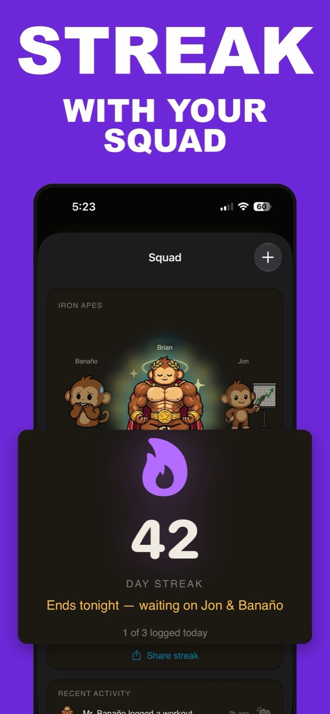

Gamified Workout Apps: Streaks, Pets, and Ranks That Don't Ruin Your Log
You're searching for a gamified workout app because consistency is the hard part, and you'd like a nudge that doesn't feel like homework. The catch: most of what ranks for that search was built for step counts and habit checkboxes, not barbells. If an app can't store "bench press, 3 sets of 8 at 185," its game layer has nothing real to respond to — and you'll quietly abandon the game and the log together.
Short answer: yes, it exists, but the list is short. A game layer only works for lifters when it runs on a real set-and-rep log. Step-pet games (Pikmin Bloom, Walkr) and habit RPGs (Habitica) reward movement and checkboxes, not training. As of mid-2026, Monolift is the iPhone app that puts a growing pet, five ranks, and squad streaks on top of a fast plain-text lifting log — and if you want no game layer at all, Strong and Hevy are excellent straight trackers.
Most gamified fitness apps don't actually track lifting
Search this category and you'll find three kinds of app, each decent at its own job, none built for the gym floor:
- Step-powered pet games. Pikmin Bloom (from Niantic) and Walkr grow little creatures from your daily step count. Charming, and genuinely motivating for walking. But a 10,000-step rest day looks identical to a heavy squat session, because steps are all they can see.
- Habit RPGs. Habitica hands out XP for checking off habits. "Worked out" earns the same reward whether you hit a rep PR or did two lazy sets and left. It gamifies the checkbox, not the training.
- Audio adventure games. Zombies, Run! narrates a story while you run, and it has held up for over a decade. It is a running app, though. There's no set, rep, or load anywhere in it.
None of that is a knock on those apps — it's a category mismatch. They answer "did you move today?" A lifter's question is "did you beat last Tuesday?"
The one rule: the game has to sit on a real set-and-rep log
A gamified workout tracker for serious lifters has to earn the "tracker" half first. That means the fundamentals covered in how to track workouts: exercise, weight, reps, recorded per set, with history you can pull up mid-session. If the reward loop isn't wired to those numbers, the game can't tell training apart from attendance — and attendance is the part you were already managing.
It also means entry speed. A game layer adds taps by definition, so the log underneath has to be nearly free. The test: can you record a set in a couple of seconds, one-handed, between sets? In Monolift, a workout is a plain-text note:
Bench Press: 185 lbs 8, 8, 6
Incline DB Press: 70 lbs 10, 10, 9
Lateral Raise: 25 lbs 15, 15, 12
Colon marks the exercise, commas separate sets, and the text live-renders into cards with tappable weight and rep pills. That's the whole log.
What's out there, honestly
| App | What powers the game | Real set/rep log? | Best for |
|---|---|---|---|
| Pikmin Bloom / Walkr | Daily steps | No | Walkers who want a pet |
| Habitica | Checked-off habits | No | Gamifying a to-do list |
| Zombies, Run! | Runs with audio missions | No | Runners who want a story |
| Hevy | Social feed, likes, leaderboards | Yes | Lifters who want a social network |
| Strong | Nothing — deliberately no game layer | Yes | Lifters who want a pure log |
| Monolift | Logged sets feed a pet, ranks, and squad streaks | Yes | Lifters who want a game on top of a fast log |
Credit where it's due, as of mid-2026: Hevy's feed of friends' workouts, PRs, and streaks is real accountability and it's well executed. Strong's refusal to gamify anything is exactly why plenty of powerlifters swear by it. If a straight tracker is what you actually want, read Hevy vs Strong or the full iPhone workout tracker roundup rather than forcing a game onto your training.
A fitness tamagotchi that runs on your training log
This is the section about our own app, so calibrate accordingly — but it's also why this page exists. If you searched "fitness tamagotchi app," the thing you're describing is Banaño, Monolift's gym monkey.
- He levels off your real workouts. Banaño climbs five ranks — Newbie, Lifter, Pro, Beast, Legend — as you log sessions. Not steps. Not app opens. Logged workouts.
- He decays when you skip. His Hunger, Energy, and Strength stats drop on days you don't train. Come back after a week off and he looks roughly how you feel.
- He has moods. Nine of them, each with a one-liner. It's a tamagotchi. It's supposed to be a little stupid.
- He lives outside the app. A home-screen widget and a Live Activity keep him visible on your phone without opening anything — which is where the nudge actually happens, at 6 pm when you're deciding whether to go.

"Duolingo for the gym" — take the streak, skip the guilt spiral
People type "duolingo for the gym" into a search bar because Duolingo proved that a streak plus a guilt-tripping mascot can move daily behavior. Half of that translates to lifting. Half doesn't.
What translates: making consistency visible. Lifting progress is slow, and week four feels like nothing is happening; a streak and a rank give the middle weeks something to show for themselves. What doesn't translate: daily-or-die pressure. Lifting isn't a daily-use product — rest days are part of the program, and a streak that shames you for recovering is miscalibrated for this sport.
So use the game to protect your schedule, not inflate it. Three or four sessions a week, logged, every week, is the win condition. And keep your eyes on the real scoreboard: the numbers on the bar going up, which is what tracking progressive overload is for. If fatigue piles up anyway, that's a programming question — see when to deload — not a reason to break your phone streak doing junk volume for a cartoon monkey. He'll cope.
Squads: streaks are better with witnesses
Solo streaks are easy to quietly abandon — nobody saw it break. Monolift's Squads (added in v1.6) are private crews: you share workouts with a handful of people, send kudos, and keep a group streak alive together. The group streak is the sharp part. Your skipped Thursday isn't a private stat anymore; it's the reason the crew's number resets.
Honest comparison: if what you want is a bigger social layer — mutuals, likes from strangers, a feed to scroll — Hevy does that at a scale a private squad never will. A Squad is the opposite bet: three or four people you'd text anyway, and no audience beyond them.

The honest caveat: gamification is seasoning
A pet cannot fix a slow log. If entering a set takes six taps and a keyboard, no rank ladder will keep you logging past week three — you'll just feel guilty at a higher resolution. So pick in this order: log speed first, history and PR detection second, game layer last. That order is also why Monolift's game layer works: the product underneath is a plain-text note that logs a set in about two seconds, and Banaño is the layer on top that makes week four feel like week one.
If you're coming from Hevy or Strong, the move is manual but small: paste or retype your current program as plain text once — a few minutes — and it becomes your template. There's no automatic import, to be clear. And if this whole page has talked you out of gamification entirely, fair enough: the Hevy alternatives guide covers the straight-tracker field.
If you want a pet that only grows when you actually train — sitting on a log fast enough that you'll actually feed it — Banaño is waiting at rank one.
Download on theApp StoreFree 7-day trial · iPhone · iOS 17+